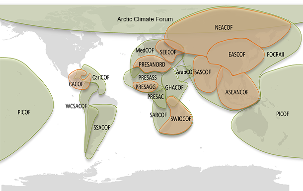

DGM/DRDH/SATP
Articles ou publications
Les forums régionaux sur les perspectives climatiques (RCOF)
RCOFs

Les forums régionaux sur les perspectives climatiques (RCOF) produisent en temps réel des produits de perspectives climatiques axés sur le consensus et pertinents pour les utilisateurs afin de réduire les risques liés au climat et de soutenir le développement durable pour la saison à venir dans des secteurs d'importance socio-économique critique pour la région en question.
À la fin des années 90, l'OMM, les Services météorologiques et hydrologiques nationaux (SMHN), les institutions régionales et d'autres organisations internationales ont lancé un processus novateur connu sous le nom de Forums régionaux sur les perspectives climatiques (RCOF). Ces forums rassemblent des experts climatiques nationaux, régionaux et internationaux, sur une base opérationnelle, pour produire des perspectives climatiques régionales basées sur les contributions - prévisions climatiques - de tous les participants.
En rassemblant des pays ayant des caractéristiques climatologiques communes, les Forums garantissent la cohérence dans l'accès aux informations climatiques et leur interprétation. Grâce à l'interaction avec les utilisateurs des secteurs économiques clés de chaque région, les agences de vulgarisation et les décideurs, les forums évaluent les implications probables des perspectives sur les secteurs socio-économiques les plus pertinents dans la région et explorent les façons dont ces perspectives pourraient être utilisées.
Aujourd'hui, le concept de base des forums régionaux sur les perspectives climatiques reste inchangé La fourniture en temps réel de produits de perspectives climatologiques axés sur le consensus est pertinents pour les utilisateurs grâce à la coopération et au partenariat régionaux. Cependant, la mise en œuvre a été adaptée pour répondre aux conditions locales. Le processus, lancé en Afrique, comprend généralement les éléments suivants:
- Réunions des experts climatiques régionaux et internationaux pour développer un consensus sur les perspectives climatiques régionales, généralement sous une forme probabiliste
- Le Forum lui-même, impliquant à la fois des climatologues et des représentants des secteurs utilisateurs, pour l'identification des impacts et des implications et la formulation de stratégies de réponse
- Un atelier de formation sur les prévisions climatiques saisonnières pour renforcer les capacités des climatologues nationaux et régionaux
- Séances de sensibilisation spéciales auxquelles participent des experts des médias pour développer des stratégies de communication efficaces
Chaque forum examine également les obstacles à l'utilisation des informations climatiques ainsi que les expériences et les réussites dans l'utilisation des produits climatiques passés publiés par le forum afin d'améliorer les applications sectorielles. Ces forums régionaux sur les perspectives climatiques sont suivis de forums nationaux pour élaborer des perspectives climatiques détaillées à l'échelle nationale et des informations sur les risques, y compris les vigilances et les opportunités sont communiquées aux décideurs et au public.
Les forums ont facilité la coopération et la mise en réseau régionales et ont démontré les avantages du partage d'informations et d'expériences sur le climat. Une interaction étroite entre les fournisseurs et les utilisateurs d'informations et de prévisions climatiques a amélioré la rétroaction des utilisateurs aux climatologues et a catalysé le développement de nombreux produits spécifiques aux utilisateurs.
Les articles récents
Les prévisions saisonnières à Madagascar

La Direction Générale de la Météorologie organise un forum National sur les perspectives climatiques de la saison chaude et humide au environ du mois d’Octobre. Les informations climatiques sur la saison à venir
Lire plusLes centres mondiaux de prévisions numériques du climat (GPCs)

Avec la formulation de l’OMM Global Producing Centres for Long-Range Forecasts (GPCs-LRF) en 2006 et les Lead Centre for Long-Range Forecast Multi-model Ensemble (LC-LRFMME) en 2009, les infrastructures pour les prévisions saisonnières opérationnelles ont atteint un niveau mature.
Lire plus